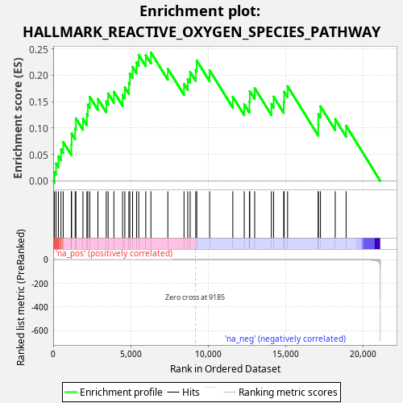
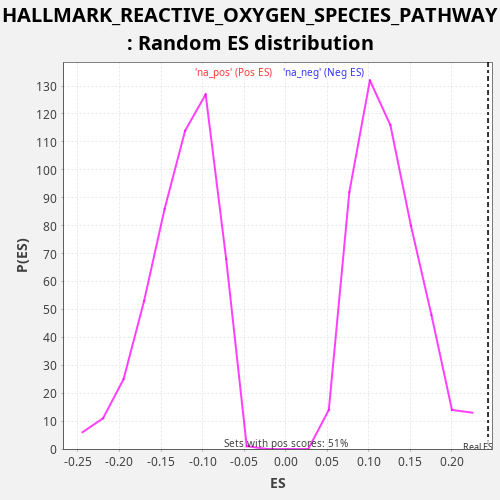

| Dataset | CCLE |
| Phenotype | NoPhenotypeAvailable |
| Upregulated in class | na_pos |
| GeneSet | HALLMARK_REACTIVE_OXYGEN_SPECIES_PATHWAY |
| Enrichment Score (ES) | 0.24336529 |
| Normalized Enrichment Score (NES) | 2.0079415 |
| Nominal p-value | 0.0 |
| FDR q-value | 0.009334555 |
| FWER p-Value | 0.105 |

| SYMBOL | RANK IN GENE LIST | RANK METRIC SCORE | RUNNING ES | CORE ENRICHMENT | |
|---|---|---|---|---|---|
| 1 | GLRX | 83 | 4.135 | 0.0169 | Yes |
| 2 | ERCC2 | 186 | 0.869 | 0.0329 | Yes |
| 3 | FTL | 336 | 0.241 | 0.0467 | Yes |
| 4 | PFKP | 503 | 0.108 | 0.0596 | Yes |
| 5 | HMOX2 | 646 | 0.069 | 0.0737 | Yes |
| 6 | GPX3 | 1170 | 0.021 | 0.0697 | Yes |
| 7 | PRDX6 | 1192 | 0.020 | 0.0896 | Yes |
| 8 | OXSR1 | 1418 | 0.015 | 0.0997 | Yes |
| 9 | MGST1 | 1467 | 0.014 | 0.1183 | Yes |
| 10 | MSRA | 1922 | 0.007 | 0.1176 | Yes |
| 11 | GLRX2 | 2178 | 0.006 | 0.1263 | Yes |
| 12 | NQO1 | 2237 | 0.005 | 0.1444 | Yes |
| 13 | SOD1 | 2365 | 0.005 | 0.1592 | Yes |
| 14 | ATOX1 | 2889 | 0.003 | 0.1552 | Yes |
| 15 | TXNRD1 | 3427 | 0.002 | 0.1506 | Yes |
| 16 | EGLN2 | 3548 | 0.002 | 0.1657 | Yes |
| 17 | PDLIM1 | 3921 | 0.001 | 0.1689 | Yes |
| 18 | NDUFA6 | 4485 | 0.001 | 0.1630 | Yes |
| 19 | TXN | 4628 | 0.001 | 0.1771 | Yes |
| 20 | NDUFB4 | 4890 | 0.001 | 0.1856 | Yes |
| 21 | MPO | 4949 | 0.001 | 0.2036 | Yes |
| 22 | STK25 | 5128 | 0.001 | 0.2160 | Yes |
| 23 | LAMTOR5 | 5385 | 0.000 | 0.2247 | Yes |
| 24 | G6PD | 5526 | 0.000 | 0.2389 | Yes |
| 25 | SRXN1 | 5979 | 0.000 | 0.2383 | Yes |
| 26 | PRDX4 | 6312 | 0.000 | 0.2434 | Yes |
| 27 | PRDX1 | 7404 | 0.000 | 0.2124 | No |
| 28 | GPX4 | 8450 | 0.000 | 0.1837 | No |
| 29 | SBNO2 | 8693 | 0.000 | 0.1930 | No |
| 30 | PTPA | 8847 | 0.000 | 0.2066 | No |
| 31 | PRDX2 | 9210 | -0.000 | 0.2103 | No |
| 32 | SCAF4 | 9272 | -0.000 | 0.2282 | No |
| 33 | NDUFS2 | 10105 | -0.000 | 0.2096 | No |
| 34 | PRNP | 11602 | -0.000 | 0.1594 | No |
| 35 | CAT | 12340 | -0.000 | 0.1453 | No |
| 36 | GCLC | 12674 | -0.000 | 0.1503 | No |
| 37 | CDKN2D | 12699 | -0.000 | 0.1700 | No |
| 38 | GCLM | 13015 | -0.001 | 0.1759 | No |
| 39 | JUNB | 14094 | -0.001 | 0.1456 | No |
| 40 | IPCEF1 | 14237 | -0.001 | 0.1597 | No |
| 41 | MBP | 14891 | -0.002 | 0.1495 | No |
| 42 | GSR | 14919 | -0.002 | 0.1691 | No |
| 43 | ABCC1 | 15141 | -0.002 | 0.1794 | No |
| 44 | HHEX | 17119 | -0.010 | 0.1065 | No |
| 45 | SOD2 | 17128 | -0.010 | 0.1269 | No |
| 46 | FES | 17264 | -0.012 | 0.1413 | No |
| 47 | LSP1 | 18218 | -0.027 | 0.1170 | No |
| 48 | TXNRD2 | 18920 | -0.060 | 0.1045 | No |

{kind=link}
{kind=link}